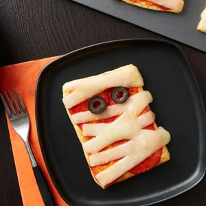
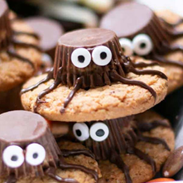
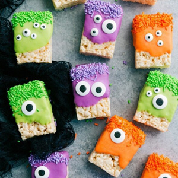
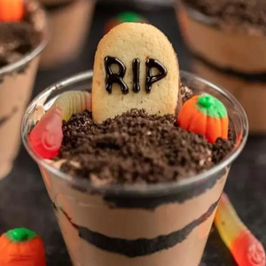

Snack 1, Crescent Mummy Pizzas. A Halloween Favorite snack for your party menu. Easy-to-make finger food that can be made in 15 minutes!
Crescent Mummy Pizzas
Ingredients:
- 1 can (8 oz) refrigerated Pillsbury™ Original Crescent Rolls
- 1/3 cup pizza sauce
- 8 slices mozzarella cheese, cut into 8 strips each
- Heat oven to 375°F. Spray large cookie sheet with cooking spray.
- Separate crescent dough into 4 rectangles; press seams together. (If using crescent dough sheet, unroll and cut into 4 equal rectangles.) Using pizza cutter or sharp knife, cut each rectangle crosswise in half. Place crescent squares on cookie sheet, and press out slightly. Bake 8 to 9 minutes or until light golden brown; remove from oven.
- Place on baking sheet and bake for 10-12 minutes or until golden brown.
- Spread about 2 teaspoons of the pizza sauce on top of each crescent square. Top each with 8 strips of mozzarella cheese, alternating and overlapping strips to look like mummy bandages. Add 2 olive or pepperoni slices to each for eyes.
- Bake 2 to 3 minutes longer or until cheese slightly melts. Serve warm. Find more info at Pillsbury

Snack 2, Peanut Butter Spider Cookies. A fun and easy Halloween snack that kids will love,super simple to make and super delicious to eat!
Peanut Butter Spider Cookies
Ingredients:
- 12 penut butter cookies (store bought or home made)
- 12 mini Reese's Peanut Butter Cups
- 1/4 cup semi-sweet chocolate, melted
- 24 mini candy eyeballs
- Melt the chocolate in a double boiler or in the microwave, stirring every 30 seconds until smooth and melty. Transfer the chocolate to a piping bag or Ziploc bag with a tiny bit of the end snipped off.
- Place a tiny bit of melted chocolate in the middle of a peanut butter cookie then press a mini peanut butter cup on top. Using the piping bag, create 8 “legs” with the chocolate, 4 on each side. Repeat with remaining cookies.
- Use a bit of the melted chocolate on the front of the Reese’s peanut butter cup and place 2 mini candy eye balls on top, pressing them on.

Snack 3, Monster Rice Krispies. A fun and easy Halloween snack that kids will love,super simple to make and super delicious to eat!
Monster Rice Krispies
Ingredients:
- 1 (12-ounce) bag candy melts
- 1 (16-pack) box individually wrapped Rice Krispies Treats
- candy eyeballs
- 3 teaspoons shortening
- colored sprinkles
- Line a large sheet pan with parchment paper and set aside.
- Add candy melts to microwave-safe bowls. If using one color, divide it into three equal parts. If using multiple colors, place about 1/3 of each color into separate bowls. Optionally add shortening or oil for easier application of the chocolate to the krispie treats, 1 teaspoon to each 1/3 chocolate candy melts.
- Microwave each bowl in 20-second bursts, stirring vigorously for 10 seconds between each burst until smooth.
- Unwrap Rice Krispies Treats.
- Once chocolate is smooth, dip Krispie Treats in melted chocolate and use a spoon to help spread it over the treat, giving it a ragged “monster” look.
- Working quickly (the melted candy melts harden fast), press on candy eyeballs and sprinkles (if desired). Decorate however you’d like!
- Transfer to the prepared sheet pan and allow chocolate to set at room temperature. Best enjoyed the same day they’re made.

Dirt cups, a halloween party classic for any halloween event! super easy, creative, and customizable!
Dirt cups
Ingredients:
- Oreo cookies
- cool whip
- Instant Chocolate Pudding Mix
- Milano Cookies
- Gummy Worms and Candy Pumpkin
- Wilton Black Writing Icing
- Get out a mixing bowl and combine the pudding mix and the cold milk. Allow to set in the fridge for about 10 minutes.
- Add the whipped topping and fold it until well combined. Put this in the fridge for about 20 minutes so the mixture can chill.
- Put the cookies in the food processor and pulse until the cookies are fine crumbs.
- Assemble the dessert in clear plastic cups. First, put some of the chocolate pudding layer in each cup. Then add the cookie crumbs. Keep repeating until full. Top with the Milano cookies and write RIP on the top of each cookie with the black icing. You can also add gummy works and candy pumpkins.
